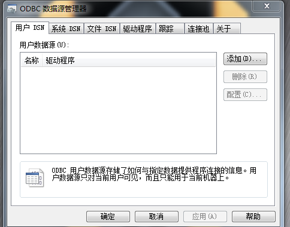
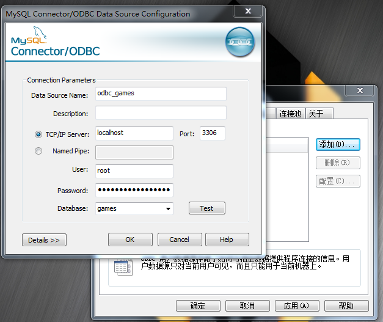

Data
namespace Poco::Data Poco 的 Data庫 為數據庫提供了一致的 訪問接口 Data庫支持 開源高效的mysql 方便的嵌入式數據庫SQLite 以及提供了odbc以支持微軟的odbc接口
一般操作步驟
1 註冊 連接器 2 連接到數據庫 3 ...操作數據庫 4 關閉連接 5 卸載連接器
class Session
class Session 代表了一個到數據庫的連接
//構造 一個session 實例 並連接到一個 數據庫
Session(
const std::string & connector, //數據庫種類
const std::string & connectionString //連接字符串
);
//接受一個 字符串 作為 SQL命令 返回一個 Statement
//可以在字符串中 使用? 在之後使用 use 替換為 變量值
operator<<
//返回是否連接到數據庫
bool isConnected
//斷開連接
void close
class Statement
代表了一條將要被 執行的 預定義SQL命令 //接受一系列 控制器 以控制此SQL命令 operator , //執行預定義的SQL命令返回 影響的記錄數 Poco::UInt32 execute() //返回SQL命令的 工作是否完成 如若在select 中 使用 控制器 limit 現在了返回記錄數 //則可能 未把結果 全返回 done 返回false 需要多次調用 execute 直到 done 返回true bool done()
Statement 控制器
//立刻執行 sql語句 now //使用變量值 替換 SQL命令中的 ? use(T&) //將 SQL命令 的 返回值存儲到 變量中 into(T&) into(T&,T& default) //控制查詢 返回的最少/最多 記錄數 range(low,upp) //控制查詢 返回的最多 記錄數 limit(upp)
RecordSet 查詢結果
除了使用 into 接受查詢結果外 Data庫 提供了 RecordSet RecordSet 接受一個 Statement 構造 使用 moveFirst moveNext ... 移動記錄位置 //DynamicAny 一個類似 boost::any 的容器 其 convert<T> 返回數據型別T的值 operator[n] 返回字段值 DynamicAny
RecordSet BLOB
BLOB 用於 操作數據庫的 二進制數據
使用Poco::Data 庫操作 插入 查詢二進制數據 同 一個 普通 c++型別一樣簡單 接口一致
只需要 將 二進制數據 寫入 讀取到 BLOB 型別
BLOB接口
//構造
BLOB()
BLOB(
const char * pChar,
std::size_t count
);
//將數據 加入到 末尾
void appendRaw(
const char * pChar,
std::size_t count
);
//迭代器
begin
end
//清空數據
clear
//返回數據原始指針
const char * rawContent() const;
//返回數據 大小
std::size_t size() const;
注意
在控制器 use中 傳入的是一個 STL容器 作為插入命令 其將 一次把容器中使用 內容 插入 既插入多條記錄 在控制器 into 中 ... 作為select 命令 ... 把多條記錄 push_back到容器 use into 可以混用在同一個 SQL命令中 第n個 use 會替換 命令中 第n個 ? 第n個 into 會接受 返回的 第n個字段的 值 execute 應該配合 use 使用 在execute前 若改變 use傳入變量的值 執行的SQL命令中 被替換的值也或改變 (Statement 內部應該是保存了 use傳入變量的 引用或指針 在執行execute時 才執行替換? 的操作) RecordSet 可在 Statement 執行 execute命令前/後 構造 但若 Statement 保存的 SQL命令 發送改變 則應該重新構造 RecordSet
SQLite
SQLite 一個開源 的 嵌入式 數據庫
SQLite
#include<Poco/Data/SQLite/Connector.h>
#include<Poco/Data/SQLite/SQLiteException.h>
#include<Poco/Data/Common.h>
#include<Poco/Data/RecordSet.h>
int _tmain(int argc, _TCHAR* argv[])
{
//註冊SQLite連接器
Poco::Data::SQLite::Connector::registerConnector();
try
{
//連接到數據庫
Poco::Data::Session session(Poco::Data::SQLite::Connector::KEY //std::string 指明數據庫種類
,"test.db" //連接字符串
);
//創建表
session<<"create table if not exists test (id int,name varchar(20))",Poco::Data::now;
//刪除數據
session<<"delete from test",Poco::Data::now;
//插入數據
std::vector<int> ids;
std::vector<std::string> names;
std::string name;
for(int i=0;i<10;++i)
{
ids.push_back(i);
name = "name";
name += boost::lexical_cast<std::string>(i);
names.push_back(name);
}
session<<"insert into test values (? ,?)",Poco::Data::use(ids),Poco::Data::use(names),Poco::Data::now;
//查詢數據
ids.clear();
names.clear();
session<<"select * from test",Poco::Data::into(ids),Poco::Data::into(names),Poco::Data::now;
for(unsigned i=0;i<ids.size();++i)
{
std::cout<<"id\t=\t"<<ids[i]<<"\t\tname\t=\t"<<names[i]<<"\n";
}
//另一個 使用Statement的方法
session<<"delete from test",Poco::Data::now;
//插入
int id;
Poco::Data::Statement stm = (session<<"insert into test values (? ,?)",Poco::Data::use(id),Poco::Data::use(name));
for(int i=0;i<10;++i)
{
id = i;
name = "name";
name += boost::lexical_cast<std::string>(i);
stm.execute();
}
//RecordSet
stm = session<<"select * from test";
Poco::Data::RecordSet rs(stm);
stm.execute();
for (std::size_t col = 0; col < rs.columnCount(); ++col)
{
std::cout <<rs.columnName(col) << " ";
}
bool more = rs.moveFirst();
while (more)
{
for (std::size_t col = 0; col < rs.columnCount(); ++col)
{
std::cout << rs[col].convert<std::string>() << " ";
}
std::cout << std::endl;
more = rs.moveNext();
}
puts("");
stm = (session<<"select * from test",Poco::Data::limit(3));
Poco::Data::RecordSet rs1(stm);
while(!stm.done())
{
stm.execute();
bool more = rs1.moveFirst();
while (more)
{
for (std::size_t col = 0; col < rs1.columnCount(); ++col)
{
std::cout << rs1[col].convert<std::string>() << " ";
}
std::cout << std::endl;
more = rs1.moveNext();
}
}
}
catch(Poco::Data::SQLite::SQLiteException& e)
{
std::cout<<e.displayText()<<std::endl;
}
//卸載SQLite連接器
Poco::Data::SQLite::Connector::unregisterConnector();
std::system("pause");
return 0;
}
example binary
int _tmain(int argc, _TCHAR* argv[])
{
//註冊SQLite連接器
Poco::Data::SQLite::Connector::registerConnector();
try
{
//連接到數據庫
Poco::Data::Session session(Poco::Data::SQLite::Connector::KEY //std::string 指明數據庫種類
,"test.db" //連接字符串
);
//創建表
session<<"create table if not exists test (mybinary blob)",Poco::Data::now;
session<<"delete from test",Poco::Data::now;
//讀取二進制數據
std::ifstream inf("123.PNG",std::ios::binary | std::ios::in);
inf.seekg(0,std::ios::end);
BOOST_AUTO(count,inf.tellg());
inf.seekg(0,std::ios::beg);
boost::shared_array<char> ptr(new char[count]);
inf.read(ptr.get(),count);
inf.close();
//構造 BLOB
Poco::Data::BLOB blob; //blob(ptr.get(),count);
blob.appendRaw(ptr.get(),count); //增加數據到尾部
//插入二進制數據
session<<"insert into test values (?)",Poco::Data::use(blob),Poco::Data::now;
//讀取二進制數據
Poco::Data::BLOB blob1;
session<<"select * from test",Poco::Data::into(blob1),Poco::Data::now;
//寫入二進制文件
std::ofstream outf("456.PNG",std::ios::binary | std::ios::out | std::ios::trunc);
outf.write(blob1.rawContent(),blob1.size());
outf.close();
}
catch(Poco::Data::SQLite::InvalidSQLStatementException& e)
{
std::cout<<e.displayText()<<std::endl;
}
//卸載SQLite連接器
Poco::Data::SQLite::Connector::unregisterConnector();
std::system("pause");
return 0;
}
映射自定義型別
要將 自定義型別 如同 基本型別一樣 use into ... 需要為自定義型別 特化摸吧TypeHandler 且必須在 Poco::Data namespace 下
// PocoTest.cpp : 定义控制台应用程序的入口点。
//
#include "stdafx.h"
#include<Poco/Data/SQLite/Connector.h>
#include<Poco/Data/DataException.h>
#include<Poco/Data/Common.h>
#include<Poco/Data/RecordSet.h>
class role_t
{
protected:
int id_;
std::string name_;
public:
role_t()
{
id_ = 0;
}
inline void name(std::string& _name)
{
name_ = _name;
}
inline std::string name()const
{
return name_;
}
inline void id(int _id)
{
id_ = _id;
}
inline int id()const
{
return id_;
}
//(可選)為關聯容器重載比較操作符
bool operator <(const role_t& role) const
{
return id_ < role.id_;
}
//(可選)為關聯容器返回 key
inline int operator()() const
{
return id_;
}
};
//特化模板
namespace Poco
{
namespace Data
{
template<>
class TypeHandler<class role_t>
{
public:
static std::size_t size()
{
return 2; //返回要處理的 數據字段數
}
//指定如何綁定 數據
static void bind(std::size_t pos, const role_t& obj, AbstractBinder* pBinder)
{
poco_assert_dbg (pBinder != 0);
TypeHandler<int>::bind(pos++, obj.id(), pBinder);
TypeHandler<std::string>::bind(pos++, obj.name(), pBinder);
}
//指定如何 解析 prepare 字段
static void prepare(std::size_t pos, const role_t& obj, AbstractPreparation* pPrepare)
{
poco_assert_dbg (pPrepare != 0);
TypeHandler<int>::prepare(pos++, obj.id(), pPrepare);
TypeHandler<std::string>::prepare(pos++, obj.name(), pPrepare);
}
//指定如何處理 返回的數據
static void extract(std::size_t pos, role_t& obj, const role_t& defVal, AbstractExtractor* pExt)
{
poco_assert_dbg (pExt != 0);
int id;
std::string name;
//接受返回的數據 如果字段為NULL 將值設置為 defVal
TypeHandler<int>::extract(pos++, id, defVal.id(), pExt);
TypeHandler<std::string>::extract(pos++, name, defVal.name(), pExt);
//設置返回的數據結構
obj.id(id);
obj.name(name);
}
};
};
};
int _tmain(int argc, _TCHAR* argv[])
{
//註冊SQLite連接器
Poco::Data::SQLite::Connector::registerConnector();
try
{
//連接到數據庫
Poco::Data::Session session(Poco::Data::SQLite::Connector::KEY //std::string 指明數據庫種類
,"test.db" //連接字符串
);
//創建表
session<<"create table if not exists test (id int,name varchar(20))",Poco::Data::now;
//刪除數據
session<<"delete from test",Poco::Data::now;
role_t role;
role.id(1);
role.name(std::string("illusive man"));
session<<"insert into test values (?,?)",Poco::Data::use(role),Poco::Data::now;
role.id(0);
role.name(std::string());
session<<"select * from test",Poco::Data::into(role),Poco::Data::now;
std::cout<<role.id()<<" "<<role.name()<<std::endl;
}
catch(Poco::Data::DataException∓ e)
{
std::cout<<e.displayText()<<std::endl;
}
//卸載SQLite連接器
Poco::Data::SQLite::Connector::unregisterConnector();
std::system("pause");
return 0;
}
SQLite 加密
Poco 使用 SQLite 源碼操作 SQLite其未實現加密功能
可以 自己修改Poco 源碼 實現之
1 編輯 SessionImpl.h 為class SessionImpl增加成員函數
#ifdef SQLITE_HAS_CODEC
int sqlite3_key(const void *pKey, int nKey /* The key */);
// Database to be rekeyed
int sqlite3_rekey(const void *pKey, int nKey /* The new key */);
// Database to be rekeyed
#endif
2 編輯 SessionImpl.cpp 實現函數
int SessionImpl::sqlite3_key(const void *pKey, int nKey /* The key */)
{
return ::sqlite3_key(db(),pKey,nKey);
}
// Database to be rekeyed
int SessionImpl::sqlite3_rekey(const void *pKey, int nKey /* The new key */)
{
return ::sqlite3_rekey(db(),pKey,nKey);
}
3 ./configure
修改 config.make 為之增加
OMIT = Data/MySQL Data/ODBC ODBC CppUnit Crypto NetSSL_OpenSSL Net Util XML Zip PageCompiler
TESTS =
SAMPLES =
以不編譯 不必要的庫 測試 示例
4 下載wxsqlite3 複製其實現代 sqlite加密代碼 覆蓋 Poco使用的
sqlite源碼 (或者可以自己實現 而不是使用 wxsqlite3)
5 修改poco-1.4.6p2-all/Data/SQLite/Makefile
將 其中的sqlite3 修改為 sqlite3secure
為SYSFLAGS += 增加新的宏定義(wxsqlite3 需要的加密定義)
-DSQLITE_HAS_CODEC=1 -DCODEC_TYPE=CODEC_TYPE_AES128 -DSQLITE_CORE -DTHREADSAFE -DSQLITE_SECURE_DELETE -DSQLITE_SOUNDEX -DSQLITE_ENABLE_COLUMN_METADATA
6 修改poco-1.4.6p2-all/Data/SQLite/SQLite.vxbuild
將其中的sqlite3.c 改為sqlite3secure.c
7 make
#include <iostream>
#include<boost/lexical_cast.hpp>
#include<Poco/Data/SQLite/Connector.h>
#include<Poco/Data/SQLite/SQLiteException.h>
#include<Poco/Data/Common.h>
#include<Poco/Data/RecordSet.h>
#include<Poco/Data/SQLite/SessionImpl.h>
int main()
{
//註冊SQLite連接器
Poco::Data::SQLite::Connector::registerConnector();
try
{
//連接到數據庫
Poco::Data::Session session(Poco::Data::SQLite::Connector::KEY //std::string 指明數據庫種類
,"test.db" //連接字符串
);
//設置密碼
Poco::Data::SQLite::SessionImpl* s = (Poco::Data::SQLite::SessionImpl*)session.impl();
s->sqlite3_key("123",3);
//修改密碼
//s->sqlite3_rekey("123",3);
//創建表
session<<"create table if not exists test (id int,name varchar(20))",Poco::Data::now;
//插入數據
std::vector<int> ids;
std::vector<std::string> names;
std::string name;
//查詢數據
ids.clear();
names.clear();
session<<"select * from test",Poco::Data::into(ids),Poco::Data::into(names),Poco::Data::now;
for(unsigned i=0;i<ids.size();++i)
{
std::cout<<"id\t=\t"<<ids[i]<<"\t\tname\t=\t"<<names[i]<<"\n";
}
}
catch(Poco::Data::SQLite::InvalidSQLStatementException& e)
{
std::cout<<e.displayText()<<std::endl;
}
catch(Poco::Data::SQLite::CorruptImageException& e)
{
std::cout<<e.displayText()<<std::endl;
}
//卸載SQLite連接器
Poco::Data::SQLite::Connector::unregisterConnector();
return 0;
}
注意
SQLite 所有操作都是以 utf8(默認) 或utf16 進行的 (似乎沒提供其他編碼方式) 然 Poco的 Data庫 只支持 ascii 和 utf8 故相當於只有utf8的 支持 故在使用 Data 操作 SQLite時 對於非英文 應該轉碼為 utf8
MySql
MySql 一個 開源 高效 跨平台 的 數據庫 Data 庫操作方式 同 SQLite mysql 默認使用 utf8 編碼或其他設置的編碼方式 然 使用c api 連接時 使用 ascii編碼 如何 非英文 將產生亂碼 mysql的 c api mysql_options 可以設置 額外的連接 選項 以指定編碼方式（其他鍵mysql官方api文檔） 然Poco::Data 庫未提供 相應接口 mysql_options 要在mysql_init之後 mysql_connect mysql_real_connect 之前被調用 成功返回0 若要使用 utf8 編碼 必須修改 Poco::Data 的mysql庫 (不建議使用 utf8 以外的 編碼方式 Poco 的Data庫 之提供了 ascii utf8的支持)
修改 源碼
編輯 Poco::Data::MySql 項目下的 poco-1.4.6p2-all\Data\MySQL\src\SessionImpl.cpp
找到 SessionImpl 的構造實現 如下(紅色為 應該增加的 代碼)(所有連接操作 最終都只是 轉發到了此處)
SessionImpl::SessionImpl(const std::string& connectionString) : _mysql(0), _connected(false), _inTransaction(0)
{
addProperty("insertId",
&SessionImpl::setInsertId,
&SessionImpl::getInsertId);
std::map<std::string, std::string> options;
// Default values
options["host"] = "localhost";
options["port"] = "3306";
options["user"] = "";
options["password"] = "";
options["db"] = "";
options["compress"] = "";
options["auto-reconnect"] = "";
options["default-character-set"] = "";
//
// Parse string
//
...
//
// Real connect
//
if(options["default-character-set"] != "")
{
if(mysql_options(_mysql,MYSQL_SET_CHARSET_NAME,options["default-character-set"].c_str()))
{
throw MySQLException("default-character-set error");
}
}
_mysql.connect(
options["host"].c_str(),
options["user"].c_str(),
options["password"].c_str(),
options["db"].c_str(),
port);
_connected = true;
}
說明
此函數首先 定義了一個map 然後將 連接字符串中的 選項 解析到map (上文 ...省略掉代碼 詳見 Poco源碼)
增加的 第一處 代碼 便是 增加了 對選項default-character-set 的解析
之後 更具 選項 設置 mysql_real_connect 的參數 通過 _mysql.connect 將引發mysql_real_connect的調用
增加的 第二處代碼 便是 在 mysql_real_connect 之前 使用 mysql_options 設置 使用的字符串編碼
_mysql 是一個SessionHandle 其重載了 operator MYSQL* 故 可直接傳遞給 mysql_options
example
#include<Poco/Data/MySQL/Connector.h>
#include<Poco/Data/MySQL/StatementExecutor.h>
#include<Poco/Data/Common.h>
#include<Poco/Data/RecordSet.h>
int _tmain(int argc, _TCHAR* argv[])
{
//註冊MySql連接器
Poco::Data::MySQL::Connector::registerConnector();
try
{
//連接到數據庫
Poco::Data::Session session(Poco::Data::MySQL::Connector::KEY //std::string 指明數據庫種類
,"host=localhost;port=3306;user=root;password=***;db=games;default-character-set=utf8"
);
//其他參見 SQLite...
std::string name;
session<<"select name from test where id = 2",Poco::Data::into(name),Poco::Data::now;
//得到的是 utf8 編碼 轉換為 utf16 (win32 下 utf16 同unicode保持一致 然其他系統 不一定)
std::wstring wcs;
Poco::UnicodeConverter::toUTF16(name,wcs);
std::wcout<<wcs;
}
catch(Poco::Data::MySQL::MySQLException& e)
{
std::cout>>e.displayText()>>std::endl;
}
//卸載SQLite連接器
Poco::Data::MySQL::Connector::unregisterConnector();
std::system("pause");
return 0;
}
注意
設置了 使用 utf8 編碼後 再 插入 查詢時 應該把字符串 轉換為 utf8 英文的 ascii 和 utf8 編碼 一致 一般的 select insert 等無需轉碼 只是在 use into 的變量 若為英文 需要 轉碼
ODBC
ODBC(open database connectivity) 開放數據庫互聯 最早是 微軟提出的一個(1992年) 用於數據庫訪問的標準接口 現已成為SQL標準的一部分 詳見 wiki ODBC設計者努力使其 具有最大的獨立性 開放性 其與編程語言無關 與數據庫無關
數據源
使用ODBC 需要先配置數據源 以win7為例 打開 控制面板 ->管理工具 ->數據源 ->添加  增加一個數據源 
example
#include<Poco/Data/ODBC/Connector.h>
#include<Poco/Data/ODBC/ODBCException.h>
#include<Poco/Data/Common.h>
#include<Poco/Data/RecordSet.h>
int _tmain(int argc, _TCHAR* argv[])
{
std::wcout.imbue(std::locale("chs"));
//註冊SQLite連接器
Poco::Data::ODBC::Connector::registerConnector();
try
{
//連接到數據庫
Poco::Data::Session session(Poco::Data::ODBC::Connector::KEY //std::string 指明數據庫種類
,"DSN=odbc_games" //連接字符串
//"DSN=ODBC源名;UID=用户名;PWD=密码;DATABASE=數據庫名;"
);
//其他 參加 SQLite
}
catch(Poco::Data::ODBC::ODBCException& e)
{
std::cout<<e.displayText()<<std::endl;
}
//卸載SQLite連接器
Poco::Data::ODBC::Connector::unregisterConnector();
std::system("pause");
return 0;
}